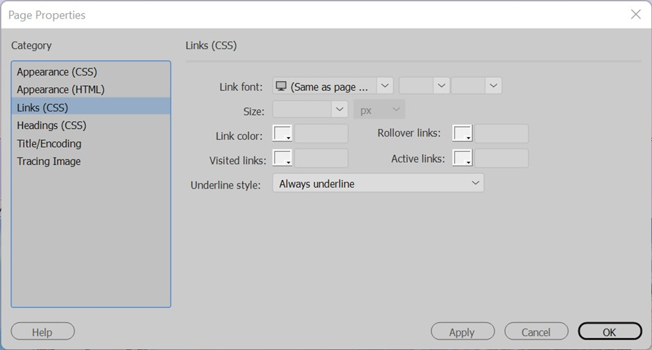
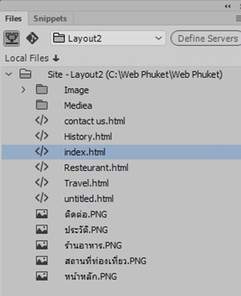

| การเตรียมความพร้อมในการใส่เนื้อหา |
| การใส่เนื้อหา (Content) ตามโครงสร้างเว็บไซต์ที่ใด้ออกแบบไว้ โดยใช้หน้าแรก คือ index himl ในการใส่เนื้อหาเพิ่มเติม ซึ่งจะอยู่ในแถวที่ 2 คอลัมน์ที่ 2 เมื่อคลิกเมาส์ในส่วนที่จะจัดทำเนื้อหา เคอร์เซอร์ (Cursor) จะไม่อยู่ด้านบน ซึ่งมีวิธีปฏิบัติดังนี้ |
| 1. กำหนดให้ Vert เท่ากับ Top ดังภาพ |
ภาพที่ 4.1 Properties |
| 2. เคอร์เซอร์จึงจะอยู่ด้านบน พร้อมที่จะใส่เนื้อหาตามที่กำหนด |
ภาพที่ 4.2 ตำแหน่งเคอร์เซอร์
|
| ทั้งนี้ จะต้องเตรียมรูปภาพและข้อความที่จัดเป็นเนื้อหาไว้ให้พร้อม โดยเนื้อหานั้นอาจจะจัดเก็บไว้ในโปรแกรม Microsoft Word แล้วจึงค่อยนำเนื้อ หามาใส่เพราะจะทำได้ง่ายและสะดวกกว่าการพิมพ์ใหม่ แต่ทั้งควรที่จะจัดทำตารางเพื่อจัดให้เนื้อหาเป็นระเบียบมากยิ่งขึ้น โดยมีวิธีปฏิบัติดังนี้ |
| 1. คลิกเมาส์ตำแหน่งที่ต้องการ 2. คลิกเมนู Insert (แทรก) แล้วเลือก Table แล้วกำหนดรูปแบบตามต้องการ เสร็จแล้วคลิกที่ปุ่ม OK |
ภาพที่ 4.3 Table
|
| 3. กำหนดให้ตารางอยู่กึ่งกลางโดยกำหนดที่ Align ให้เป็นแบบ Center |
ภาพที่ 4.4 Properties
|
| 4. ปรากฏดังภาพ |
|
ภาพที่ 4.5 แถวและคอลัมน์
|
| 5. แถวแรกเป็นแถวที่ต้องพิมพ์หัวข้อให้รวมเซลล์โดยทำแถบคลุมแถวแรกทั้ง 2 คอลัมน์ แล้วคลิกที่ Merges selected cells using spans เพื่อรวมเซลล์ |
ภาพที่ 4.6 Properties
|
| 6. ปรากฏดังภาพ |
|
ภาพที่ 4.7 แถวและคอลัมน์
|
| 7. ใส่เนื้อหาและจัดรูปแบบตามต้องการ |
ภาพที่ 4.8 การใส่เนื้อหา |
| 8. บันทึกหน้าแรก คือ index.html โดยคลิกเมนูFile แล้วเลือก Save Allในการปรับรูปแบบต้องให้พอดีกับหน้าเว็บไซต์เพราะบางครั้งเมื่อใส่รูปภาพหรือข้อความ ตารางจะล้นหน้าต่างให้คลิกที่บริเวณเส้นตารางทั้งหมด หรือคลิกตารางที่ได้ทำกรอบครอบไว้รอบนอกจนกว่าจะเป็นปกติส่วนข้อความนั้น ให้กดแป้น Shift ค้างไว้ แล้วกดEnter จะเป็นการขึ้นบรรทัดใหม่ปกติ จะต้องตัดข้อความเพื่อให้พอดีกับขนาดตาราง |
| ในที่นี้จะสร้างไฟล์ใหม่โดยใช้รูปแบบเดียวกันซึ่งเป็นที่นิยมในปัจจุบัน ซึ่งใช้หน้าแรก คือ index.html เป็นต้นแบบ มีวิธีปฏิบัติดังนี้ 1. คลิกเมนู File แล้วเลือก Save As... |
ภาพที่ 4.9 เมนู File
|
| 2. บันทึกชื่อใหม่ ในที่นี้คือ page2 โดยให้อยู่ในโฟลเดอร์เดิม คือ WebOK |
ภาพที่ 4.10 Save File
|
| 3. ดำเนินการจนครบหน้าที่ต้องการ |
ภาพที่ 4.11 ชื่อไฟล์ในการทำงาน
|
| 4. ทุกหน้าของเว็บไซต์รวมทั้งรูปภาพ จะปรากฎอยู่ใน Local Files |
ภาพที่ 4.12 พาเนล Files
|
| การใส่เนื้อหาในหน้าต่อไป |
เมื่อใส่เนื้อหาในหน้าแรกและคัดลอกไปยังหน้าต่าง ๆ จนครบแล้ว ขั้นตอนต่อไปจะเป็นการใส่เนื้อหาที่เกี่ยวข้องของแต่ละหน้า โดยมีวิธีปฏิบัติดังนี้ 1. คลิกชื่อไฟล์ที่ต้องการ ในที่นี้คือ History.html |
ภาพที่ 4.13 เลือกไฟลืการทำงาน
|
| 2. เลือกรูปภาพที่ต้องการ 3. บันทึกรูปภาพ 4. เลือกโฟลเดอร์ให้ถูกต้อง 5. เสร็จแล้วคลิกที่ปุ่ม OK 6. ใส่เนื้อหาและรูปภาพตามที่กำหนด |
ภาพที่ 4.14 index.html
|
| 7. หน้า page3.html |
|
ภาพที่ 4.15 History.html
|
| 8. หน้า page4.html |
ภาพที่ 4.16 Travel.html |
| 9. หน้า page4.html |
|
ภาพที่ 4.17 Resteurant.html
|
| 10. เมื่อดำเนินการเสร็จแล้ว ให้บันทึก โดยคลิกที่ Save All |
การเพิ่มแถว |
| ในกรณีที่ต้องการเพิ่มแถวหรือคอลัมน์ในส่วนของเมนูหรือเนื้อหา มีวิธีปฏิบัติดังนี้ 1. คลิกตารางที่ต้องการ |
ภาพที่ 4.18 การเพิ่มแถว
|
| 2. กำหนดจำนวนแถว (Rows) หรือคอลัมน์ (Cols) ในส่วนของ Properties |
ภาพที่ 4.19 Properties
|
| การเชื่อมโยง |
การเชื่อมโยงไปยังหน้าต่าง ๆ ในเว็บไซต์เดียวกัน |
|
ภาพที่ 4.20 การเชื่อมโยง
|
| 2. คลิกให้อยู่ในส่วน HTML แล้วกดเมาส์ค้างไว้ที่ Point to File ของช่อง Link ของกรอบ Properties |
ภาพที่ 4.21 Properties
|
| 3. แล้วลากเมาส์ไปยังไฟล์เว็บที่ต้องการในส่วนของ Local Site ในที่นี้หน้าแรก คือ index.html เสร็จแล้วปล่อย |
ภาพที่ 4.22 Local Site
|
| 4. ชื่อไฟล์หรือหน้าเว็บที่ต้องการจะปรากฏในช่อง Link และกำหนด Target คือ เป้าหมายว่าจะให้เปิดหน้าในรูปแบบใด ที่นิยมใช้กันบ่อย คือ _blank หมายถึง จะปรากฏลักษณะของเว็บไซต์ที่เปิดหน้าต่างใหม่ ถ้าต้องการกลับไปยังหน้าแรกจะต้องปิดหน้าต่างนี้ก่อน เหมาะสำหรับการเชื่อมโยงไปยังเว็บไซต์ต่าง ๆ _parent หมายถึง จะปรากฏลูกศรเพื่อให้คลิกกลับไปยังหน้าแรก ซึ่งอยู่ในหน้าต่างเดียวเหมาะสำหรับการเชื่อมโยงเว็บเพจในเว็บไซต์เดียวกัน ในที่นี้เลือกแบบ _parent |
|
ภาพที่ 4.23 การกำหนด Target |
| การกำหนดสีของข้อความที่ได้ทำลิงก์ไว้ มีวิธีปฏิบัติดังนี้ 1. คลิกที่ Page Properties... |
ภาพที่ 4.24 Properties
|
| 2. คลิกที่ Links (CSS) |
 ภาพที่ 4.25 Page Properties
|
| 3. เลือกสีข้อความลิงก์ตามต้องการ เสร็จแล้วให้คลิกที่ ok |
ภาพที่ 4.26 Page Properties
|
| การเชื่อมโยงไปยังหน้าต่าง ๆ ในเว็บไซต์เดียวกันมีอีกวิธีหนึ่ง คือ 1. ทำแถบสีคลุมข้อความที่ต้องการ |
|
ภาพที่ 4.27 การเชื่อมโยงไปยังหน้าต่าง ๆ
|
| 2. คลิกที่ Browse for File |
ภาพที่ 4.28 Properties
|
| 3. เลือกชื่อไฟล์ที่ต้องการ เสร็จแล้วคลิกที่ปุ่ม OK |
ภาพที่ 4.29 Save File
|
| 4. ชื่อไฟล์จะปรากฏในช่อง Link และกำหนดรูปแบบของ Target ในที่นี้เลือกแบบ _parent |
ภาพที่ 4.30 Properties
|
| การดูตัวอย่างในเบราว์เซอร์ |
| การดูตัวอย่างในเบราว์เซอร์ มีวิธีปฏิบัติดังนี้ 1.คลิกไฟล์ที่ต้องการ ในที่นี้คือ index.html ในส่วนของ Local Site |
 ภาพที่ 4.31 พาเนล Files
|
| 2. คลิกเมาส์ข้างขวาบริเวณไฟล์ที่ต้องการแล้วเลือก Open in Browser แล้วคลิกเบราว์เซอร์ที่ต้องการ ในที่นี้คือ Google Chrome |
ภาพที่ 4.32 การเปิดตัวอย่างเว็บไซต์
|
| 3. ปรากฎหน้าเว็บไซต์ดังนี้ |
ภาพที่ 4.33 หน้าเว็บไซต์
|
| สังเกตว่า การกำหนดโดรงสร้างเว็บไซค์ให้มีความกว้างเท่ากับ 1000 pixels จะมีเนื้อที่อยู่ด้านข้างอีกขึ้นอยู่กับผู้พัฒนาว่าจะเว้นไว้เพียงใดหรือไม่ เมื่อทดสอบหรือดูตัวอย่าง ให้นำไปวางบนข้อความที่ได้เชื่อมโยงไว้แล้ว รูปร่างของเมาส์จะเปลี่ยนเป็นรูปมือและสีข้อความจะเปลี่ยนไปตามที่กำหนดไว้ |
ภาพที่ 4.34 ปุ่มติดต่อที่สามารถลิกได้
|
| การเชื่อมโยงไปยังเว็บไซต์ต่าง ๆ |
| นอกจากการเชื่อมโยงด้วยข้อความและรูปภาพแล้ว ยังสามารถเชื่อมโยงไปยังอีเมลได้ โดยเฉพาะถ้าต้องการให้ผู้ดูเว็บไซต์ติดต่อกับผู้ดูแลเว็บไซต์ ซึ่งมีวิธีปฏิบัติดังนี้ 1. ทำแถบสีคลุมข้อความที่ต้องการ ส่วนใหญ่จะเป็นคำว่า ติดต่อเรา (Contact us) หรือพิมพ์ชื่อโดยตรง |
ภาพที่ 4.35 การเชื่อมโยงไปยังอีเมล
|
| 2. พิมพ์คำว่า mailto : ตามด้วยอีเมลที่ต้องการ ในช่อง Link และกำหนด Target ให้เป็นแบบ _blank |
ภาพที่ 4.36 Properties |